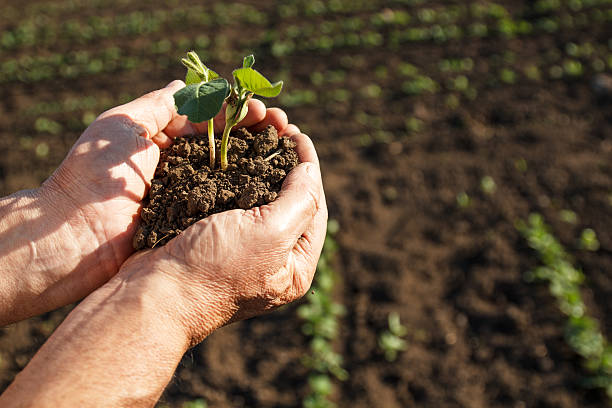
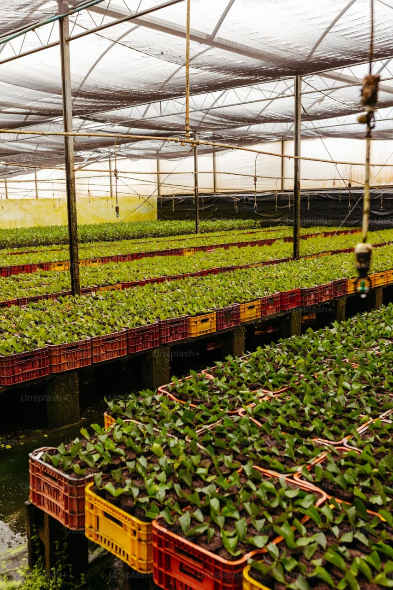
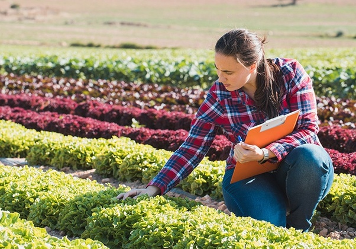

Services
A Platform by Agro-Connect Team
Agri-cart
It is an online marketplace connecting farmers and customers for buying and selling agricultural products like crops, instruments, and pesticides.

AgriSchemes Portal
It is your trusted resource for navigating agricultural schemes and funds. Discover the best options to enhance crop quality and resource availability for optimal growth.

CropCare Guide
It is your go-to online resource for expert advice on crop cultivation. From seed to harvest, we provide concise, easy-to-follow guides on sowing, nurturing, and harvesting crops.
